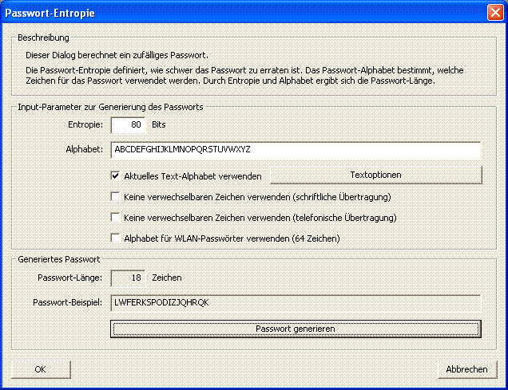

Sie erreichen diesen Dialog über den Menüeintrag Einzelverfahren \ Tools \ Passwort-Entropie.

Mit Hilfe dieses Dialogs können Sie zufällige Passwörter mit einer bestimmten Entropie erzeugen. Eine sinnvolle Anwendung dieses Dialogs ergibt sich aus folgender Überlegung:
Man geht heute davon aus, dass ein zufällig gewählter Schlüssel für moderne symmetrische Verfahren mit einer Entropie von mehr als 80 Bits als sicher gilt [1]. Will man ein entsprechend sicheres, zufälliges Passwort generieren, wählt man ein bestimmtes Passwort-Alphabet und stellt eine Passwort-Entropie von 80 oder mehr Bits ein.
Um zufällige Passwörter zu generieren, kann man einen Pseudozufallsgenerator verwenden. Noch besser ist es, wenn man darüber hinaus auf weitere Quellen für Zufallsdaten zurückgreift - zum Beispiel Mausbewegungen oder Tastatureingaben. In diesem Dialog wird nur eine Funktion aus einer Standardbibliothek als Pseudozufallsgenerator eingesetzt.
Für umfassende Informationen zu Passwörtern klicken Sie hier, Informationen zur Qualität von Passwörtern finden Sie hier.
Damit Sie ein zufälliges Passwort erzeugen können, müssen Sie im oberen Teil des Dialogs die gewünschte Passwort-Entropie sowie ein Passwort-Alphabet angeben.
Über den Button Passwort generieren können Sie ein zufälliges Passwort erzeugen.
Das Passwort-Alphabet lässt sich neben der manuellen Eingabe auf zwei weitere Weisen festlegen: Das aktuelle Alphabet aus den Textoptionen, oder das Alphabet für WLAN-Passwörter. Die zwei Optionen dienen zur Einschränkung des gewählten Alphabetes.
Ist das Kontrollkästchen Aktuelles Text-Alphabet verwenden markiert, wird das aktuell eingestellte CrypTool-Alphabet als Passwort-Alphabet verwendet. Das CrypTool-Alphabet können Sie über die Schaltfläche Textoptionen verändern. Bitte beachten Sie, dass die Schaltfläche nur dann aktiv ist, wenn das entsprechende Kontrollkästchen gesetzt ist.
Die beiden Kontrollkästchen Keine verwechselbaren Zeichen verwenden [...] stellen jeweils ein statisches Alphabet bereit, wo die Verwechslungsgefahr zwischen den einzelnen Zeichen bei der Übertragung möglichst gering ist: Im einen Fall wird ein Alphabet verwendet, das sich besonders für schriftliche Übertragungen eignet ("abcdefghijkmnopqrstuvwxyzABCDEFGHJKLMNPRSTUVWXYZ23456789"). Im anderen Fall wird ein Alphabet verwendet, das sich besonders für telefonische Übertragungen eignet ("ABCDEFGHIJKLMNOPQRSTUVWXYZ234567").
Die statischen Alphabete sollen in beiden Fällen das Risiko minimieren, dass Passwörter falsch interpretiert werden (beispielsweise könnte man bei schriftlicher Übertragung eine "1" mit einem "l" verwechseln oder bei telefonischer Übertragung ein "a" mit einem "A").
Das Kontrollkästchen Alphabet für WLAN-Passwörter verwenden (68 Zeichen) stellt ebenfalls ein statisches Alphabet ein. Der eingeschränkte Zeichensatz hat keine tiefere Bedeutung. Zwar wird in [2] darauf hingewiesen, dass der Zeichensatz keine Zeichen enthält, die in (Unix-)Shells Probleme bereiten können. Tatsächlich aber dient er eher der Bequemlichkeit und Fehlervermeidung (würde man z.B. auf der Kommandozeile quoten, könnte man auch andere Zeichen eingeben). Es mag noch andere Gründe geben, bei WLAN den Zeichensatz einzuschränken, zum Beispiel weil man exotische Zeichen auf WLAN-fähigen Geräten wie Internet-Radios, Spiele-Konsolen, iPods etc. nur schwer oder gar nicht eingeben kann.
Über den Button Passwort-Qualität messen wird der Dialog Passwort-Qualitätsmesser aufgerufen, der die Qualität des generierten Passworts misst.